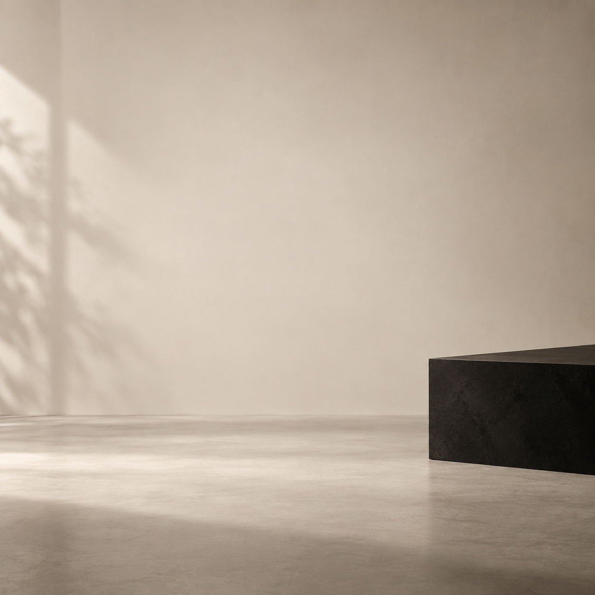
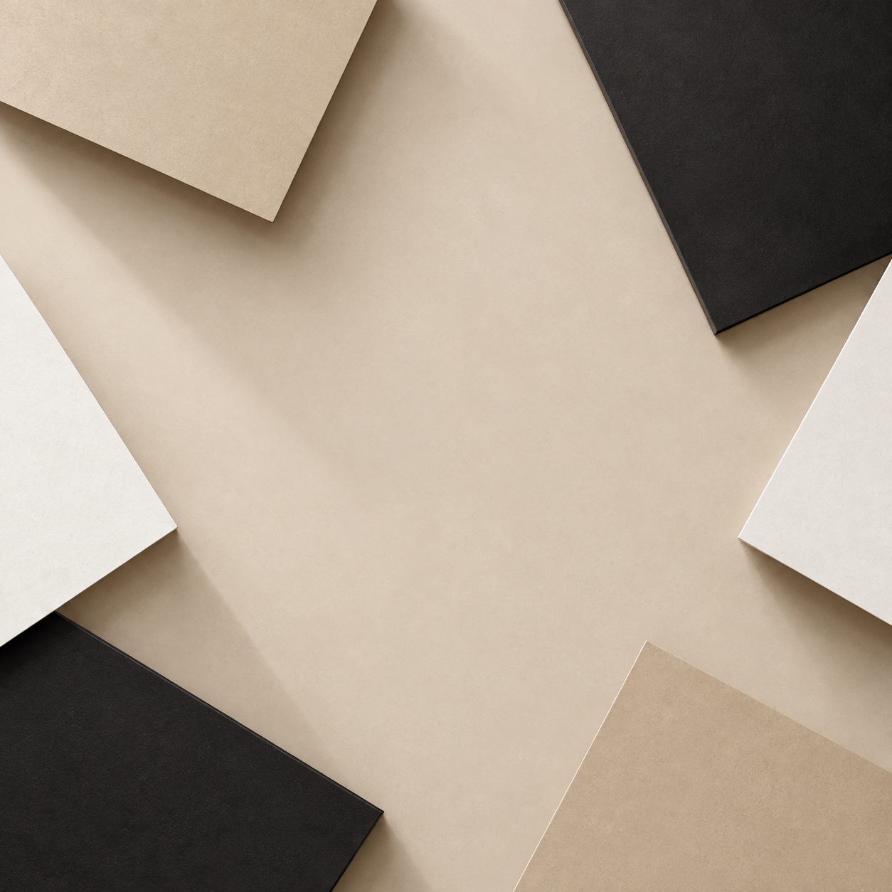

01
Presentación de marca
En Trama Urbana encontrás remeras y buzos básicos para pensar tus próximas combinaciones. Las prendas simples pueden ser el punto de partida de distintos looks y momentos. Este espacio reúne ideas para elegir y combinar esas prendas según tu estilo. Si querés conocer más sobre Trama Urbana y su propuesta, escribinos por mensaje privado y contanos qué estás buscando.
#TramaUrbana #RopaUrbana #BasicosUrbanos02
Presentación de remera

Un básico directo: remera negra, lisa y de manga corta de Trama Urbana. Una propuesta visual simple para sumar al guardarropa y usar como punto de partida para distintos estilos. Sin estampas ni elementos que le saquen protagonismo a su diseño liso. Si querés consultar más información sobre esta remera de Trama Urbana, mandanos un mensaje privado y respondemos tus consultas.
#TramaUrbana #RemeraNegra #EstiloUrbano03
Idea de combinación

Una idea simple para armar un look: combinar la remera negra, lisa y de manga corta de Trama Urbana con un jean y zapatillas blancas. El jean y las zapatillas son solo una propuesta de combinación y no forman parte del catálogo mencionado. Podés tomar la idea y adaptarla a tu estilo. Para consultar por la remera de Trama Urbana, escribinos por mensaje privado.
#TramaUrbana #IdeaDeLook #EstiloUrbano